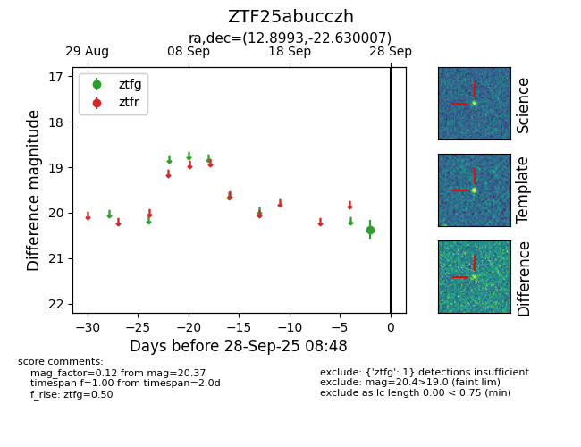

FINK: ZTF25abucczh
Lasair: ZTF25abucczh
ALeRCE: ZTF25abucczh
ZTF25abucczh (ztf,fink)
equatorial (ra, dec) = (12.8993,-22.63001)
galactic (l, b) = (123.4001,-85.50161)

last ztfg=20.37
1 ztfg detections